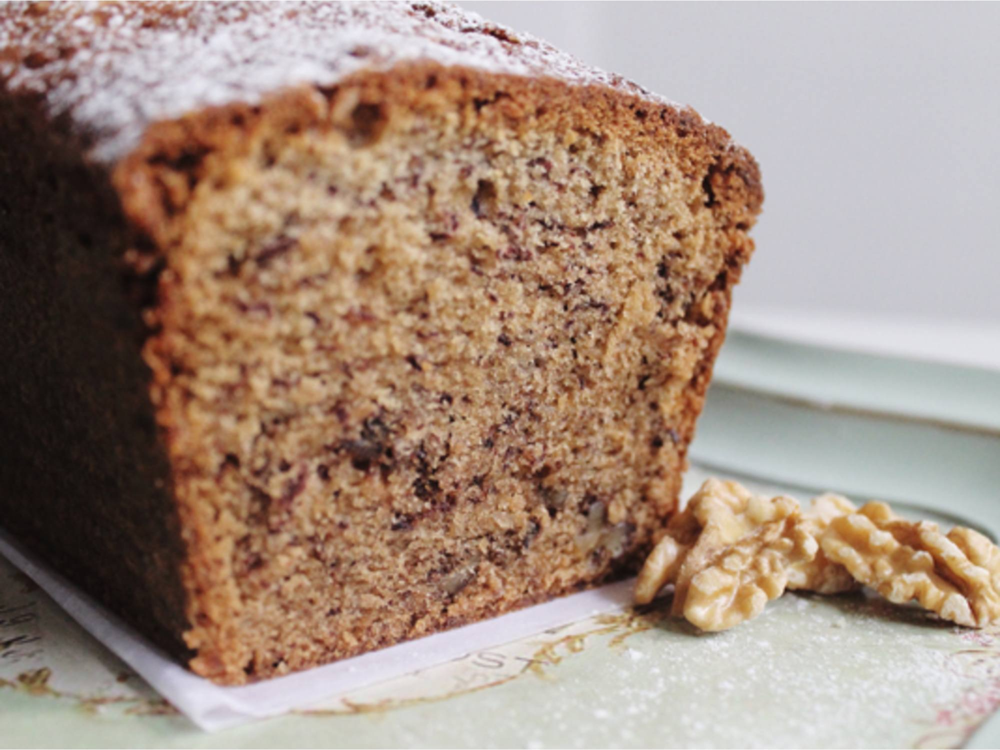

Banana Bread

Description
A delicious recipe to make a nice and fluffy banana bread.
Ingredients
- 100gr of butter
- 3/4 cups of white sugar
- 2 eggs
- 2 brown bananas
- 2 cups of flour
- 1 tsp of baking powder
- 1 tsp of baking soda
- 1/2 tsp of salt
- 1/4 cups of milk
- 1 tsp of vanilla extract
Steps
- Preheat the oven at 180°C and butter the loaf pan
- Add the sugar and butter into a bowl, mix to achieve a sandy texture
- Add 1 egg to the mixture at a time until fully incorporated
- In a separate bowl mix the flour, salt, baking powder and baking soda
- Add half of the flour mixture into the egg mixture, and mix until incorporated, then add the milk and vanilla extract. Repeat with the rest of the flour mixture
- Mash the bananas and add them to mix, feel free to add more milk if the consistency is to hard
- Pour the mixture into the loaf pan and put it in the oven for 45 minutes
- Let it cool and enjoy your banana bread!!